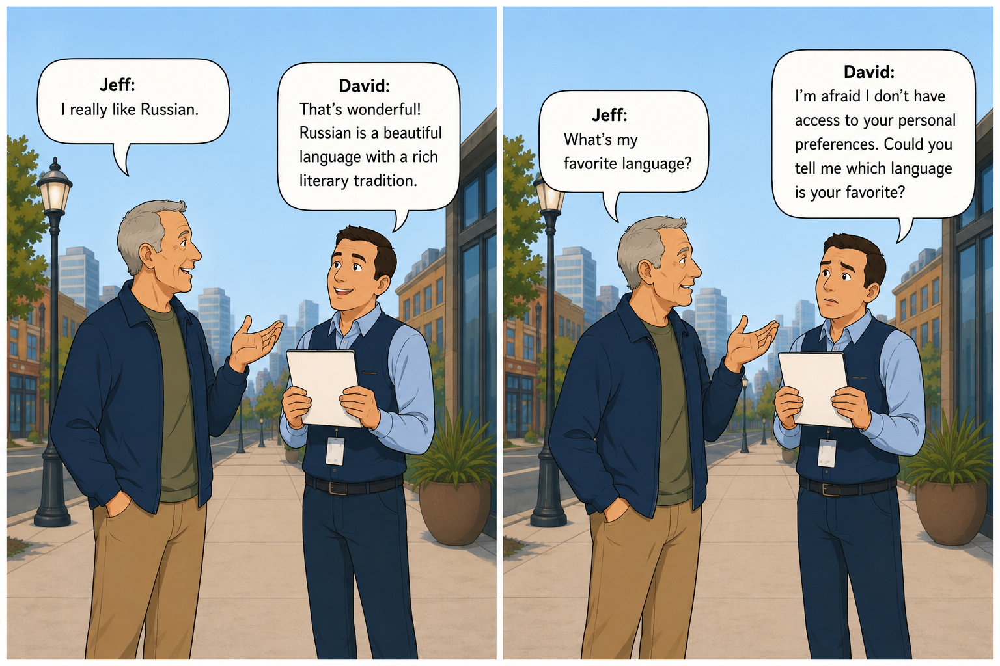

← Part 5: Where the Seconds Go · AI Lab Portal Home
What it looks like to test an AI — and what the tests actually mean.
Two men meet on a sidewalk. Jeff says he really likes Russian. David — friendly, badge around his neck — says something warm back. A moment later Jeff asks a simple question: what's my favorite language? And David tells him, politely, that he doesn't have access to that.

You don't need to know anything about how an AI works to find this strange. A person just told you a thing. You engaged with it. Thirty seconds later they ask about that same thing, and you act as though the exchange never happened. It doesn't make sense — and the paper in David's hands is going to matter more than it looks like it should.
Here is the trap. You saw David do this one time. The natural thing is to shrug — maybe he was distracted, maybe you'd get a better answer if you asked again. And that shrug is exactly the problem: from a single conversation, you genuinely cannot tell whether you've found something real or just caught one odd moment.
That itch — I can't tell if this is real — is what started everything that follows. Answering it properly means you can't just ask David again by hand a couple of times. You need to ask many Davids, identically, and write down exactly what each one says. None of the equipment for doing that existed yet. The bug is what forced us to build it.
How we built the machinery to ask properly → Part 7
The first explanation was the obvious one: maybe David never actually received what Jeff said. Maybe the words got lost on the way to him, and he answered into a void. If that were true, this would be a plumbing problem — annoying, but simple.
So we checked. Not by asking David what he remembered, but by intercepting the exact message handed to him and reading it ourselves, word for word.
This is the shape of the whole investigation in miniature: a reasonable explanation, and then a measurement that kills it. It would happen four more times.